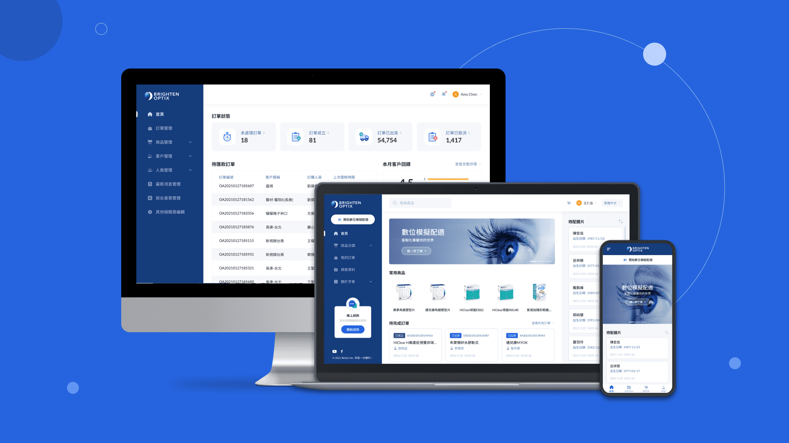

<!DOCTYPE html>
<html lang="en">
<head>
    <meta charset="UTF-8">
    <meta name="viewport" content="width=device-width, initial-scale=1.0">
    <meta http-equiv="X-UA-Compatible" content="ie=edge">
    <title>Sean Design</title>
    <link rel="shortcut icon" href="../images/favicon.ico" />
    <link rel="stylesheet" href="../css/main.css">
    <script src="../js/jquery-1.8.3.min.js"></script>
    <script src="../js/main.js"></script>
    <script src="../js/jquery.animateNumber.min.js"></script>
    <script>
        $(window).load(function() {	
            var windowH = $(window).height();
            $(window).scroll(function() {
                var scrollVal = $(this).scrollTop();
                if(scrollVal > windowH){
                    $("header").removeClass("white");
                    if(scrollVal > $(".final-work").offset().top){
                        $("header.inside").addClass("white");
                    }
                    if(scrollVal > $(".work-learning").offset().top){
                        $("header.inside").removeClass("white");
                    }
                }
                /*if(scrollVal < windowH){
                    $("header.inside").addClass("white")
                }*/
            })
            //重新整理時觸發scroll
            $(window).trigger('scroll');

            //手機選單
            $(".mobile-menu-btn").click(function(){
                $("header.inside").toggleClass("open")
            })
        })
    </script>
</head>
<body>
    <!--載入動畫-->
    <div id="loader">
        <div class="number"><span>99</span>%</div>
        <div class="circle"></div>
    </div>
    <!--頁首-->
    <header class="inside bottomIn-object">
        <div class="bottomIn-content">
            <a class="header-logo" href="index.html"></a>
            <ul class="menu-list">
                <li>
                    <a href="about.html">About</a>
                </li>
                <li>
                    <a href="../Resume_Sean.pdf" target="_blank">Resume</a>
                </li>
            </ul>
            <div class="language">
                <a href="../work-proposal.html">Ch</a>
            </div>
            <!--手機Menu按鈕-->
            <ul class="mobile-menu-btn">
                <li class="menu-btn-top"></li>
                <li class="menu-btn-middle"></li>
                <li class="menu-btn-bottom"></li>
            </ul>
        </div>
    </header>
    <!--手機Menu-->
    <div class="mobile-menu">
        <div class="mobile-menu-center">
            <ul class="mobile-menu-list">
                <li>
                    <div class="bottomIn-content">
                        <a href="about.html">About</a>
                    </div>
                </li>
                <li>
                    <div class="bottomIn-content">
                        <a href="../Resume_Sean.pdf" target="_blank">Resume</a>
                    </div>
                </li>
                <div class="mobile-menu-divider"></div>
                <li>
                    <div class="bottomIn-content">
                        <a href="../work-proposal.html">Ch</a>
                    </div>
                </li>
            </ul>
        </div>
    </div>
    <!--手機Menu結束-->
    <!--回上方-->
    
    <!--回上方結束-->
    <section class="work-intro">
        <div class="center-block slidein-object">
            <div class="content-txt bottomIn-object">
                <div class="bottomIn-content">UI/UX Design</div>
            </div>
            <h1 class="bottomIn-object">
                <div class="bottomIn-content">2019-2021 Design Proposal</div>
            </h1>
        </div>
        
    </section>
    <div class="center-block proposal">
        <div class="work-block slidein-object">
            <div class="sec-tit">Overview</div>
            <div class="work-content">
                除了執行專案之外，我們也需要負責協助業務進行設計提案，這些提案經驗提升了我的設計效率、分析痛點的熟練度與公開簡報的自信心。
                <br/><br/>
                雖然必須兼顧專案進度與提案簡報會導致嚴重加班，但我還是很慶幸能有這些提案的機會。
            </div>
        </div>
        
        <div class="work-block slidein-object">
            <div class="sec-tit">富邦UMa App</div>
            <div class="work-content">
                富邦結合AI人工智慧及機器學習模型開發，創建UMa指極系統，透過大數據分析來預測客戶的偏好及需求，讓業務及行銷人員可以更精準的提供客戶客製化的服務。
                <br/><br/>
                而此提案就是希望能夠看到在App端的呈現效果，由於客戶希望透過Prototype來展示給高層主管與內部測試，所以我們採收費方式來製作詳細的操作流程。
            </div>
        </div>
        <iframe class="work-iframe slidein-object" src="https://www.figma.com/embed?embed_host=share&url=https%3A%2F%2Fwww.figma.com%2Fproto%2F3q9w1yLVRNZGc3CO7mFYVC%2F%25E5%25AF%258C%25E9%2582%25A6UMA-%25E6%2596%25B9%25E6%25A1%25881%3Fpage-id%3D410%253A0%26node-id%3D410%253A1%26viewport%3D318%252C48%252C0.56%26scaling%3Dmin-zoom%26starting-point-node-id%3D410%253A1" allowfullscreen></iframe>
        <div class="line"></div>
        
        <div class="work-block slidein-object">
            <div class="sec-tit">國泰團險新平台</div>
            <div class="work-content">
                國泰團險希望建立一頁式groupins+網站，協助公司團體找到最適合的團保項目。
                <br/><br/>
                由於此提案只需按照客戶提供的Wireframe去設計，我跟另一位設計師就以國泰的CI去延伸提供兩款視覺風格。
                <br/><br/>
                「清新簡潔」利用插圖來營造溫馨的意象，並搭配大面積的留白與不規則的排版來帶給使用者清新、簡潔的視覺感受。
                <br/><br/>
                「現代專業」利用扁平化設計在視覺上給人簡單大方的印象，透過色塊與方角設計使整體視覺更加俐落，也能襯托出現代專業的形象
            </div>
        </div>
        
        
        
        <div class="line"></div>
        
        <div class="work-block slidein-object">
            <div class="sec-tit">Tsmc online order system</div>
            <div class="work-content">
                Tsmc與外部廠商透過此網站來確認訂單狀況，而由於Tsmc內部流程複雜且繁瑣，所以也特別設計了「Key Route」讓陌生用戶可以快速找到與自身相關的業務。
                <br/><br/>
                但此系統已經使用了十餘年，架構與風格都須重新調整，所以希望我們提供改版建議，此網站使用的文字都屬於技術用語，所以一開始也花了一些時間與客戶釐清。
                <br/><br/>
                整個提案過程進行將近一個多月，我們也進行了二次提案，最終成功與Tsmc合作。
            </div>
        </div>
        
        
        
        <div class="line"></div>
        
        <div class="work-block slidein-object">
            <div class="sec-tit">國泰投信官網</div>
            <div class="work-content">
                國泰投信主要重點為基金與活動的推廣，而客戶為了改版也收集了許多使用者的回饋，希望這次的改版可以更貼近使用者的需求。
                <br/><br/>
                這次提案我主要負責UX的規劃與簡報製作，包含現有網站痛點分析、根據使用者回饋訂定設計策略、重新規劃版面架構。
            </div>
        </div>
        
        
        
        
        
        
        <div class="line"></div>
        
        <div class="work-block slidein-object">
            <div class="sec-tit">國立故宮博物院官網</div>
            <div class="work-content">
                故宮目前的官網是採用橫向滾動的瀏覽方式，與側邊欄的指引方向不同可能導致操作混淆，而整體風格也無法帶出博物院的文藝氣質。
                <br/><br/>
                這次提案我主要負責UX的規劃，主要針對首頁、參觀頁、展覽頁來提供改版策略。除了改善現有痛點外，也希望透過主動提供相關連結增加使用者的瀏覽興趣，進而引導使用者實際到館參觀。
            </div>
        </div>
        
        
        
        
        
        
        
        
    </div>
    <section class="next-work">
        <h2 class="bottomIn-object">
            <div class="bottomIn-content">Next Work</div>
        </h2>
        <a class="next-work-content slidein-object" href="work-btox.html">
            <div class="next-work-desc">
                <div class="next-work-tit">BTOX Online Order System</div>
                <p>UI UX Design</p>
            </div>
            <div class="mask"></div>
            
        </a>
    </section>
    <footer class="index-footer">
        <div class="sec-tit">Contact</div>
        <div class="footer-main">
            <div class="footer-tit bottomIn-object">
                <div class="bottomIn-content">Get In Touch</div>
            </div>
            <ul class="index-contact-list">
                <li class="bottomIn-object">
                    <div class="bottomIn-content">09-7973-3877</div>
                </li>
                <li class="bottomIn-object">
                    <div class="bottomIn-content">dctv55827@gmail.com</div>
                </li>
            </ul>
            <div class="line"></div>
            <div class="footer-caption bottomIn-object">
                <div class="bottomIn-content">It’s ok, take your time</div>
            </div>
        </div>
    </footer>
</body>
</html>